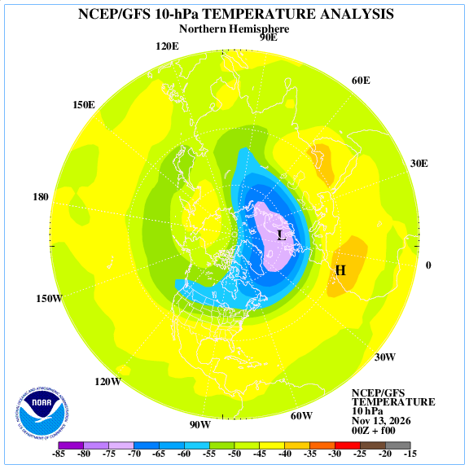
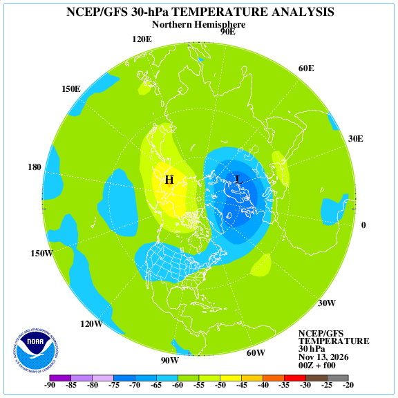
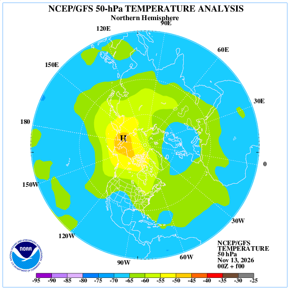

🌀 Model polárního víru
Aktuální diagnostické hodnoty
Zdroj a čas posledního záznamu se načtou z datového archivu. ERA5 je reanalýza, nikoli přímé měření v atmosféře.
Interaktivní meteorologická mapa polární stratosféry
Prostorová pole numerického modelu NOAA GFS přes Open-Meteo. Barevné body jsou modelové hodnoty ve vzorkovaných bodech severní polokoule.
Bílé šipky ukazují směr proudění. Prostorové vzorkování není plné nativní rozlišení GFS. Zdroj: Open-Meteo GFS API. Jde o modelová data, nikoli přímá měření.
Archiv měření a časové řady
Automaticky stahovaný denní archiv ERA5 od roku 1959. Jde o reanalýzu založenou na pozorováních a modelu, nikoli o přímé měření jedním přístrojem. Aktualizace archivu probíhá denně; datum posledního záznamu se zobrazuje samostatně.
Vývoj zonálního větru U60
Teplota polární čepičky
Vlnový tepelný tok
Zdroj: polarvortex.earth – datové soubory ERA5. Metodika a definice U60: metodika. Data se uchovávají v repozitáři X-5 ve verzích Git, aby bylo možné dohledat denní změny.
Nezávislá analýza NOAA GFS · severní polokoule
Automaticky archivované analýzy NCEP/GFS (f00, cyklus 00 UTC) pro tři stratosférické tlakové hladiny. Obrázky se denně ukládají do repozitáře X-5; metadata uvádějí čas stažení a kontrolní součty. Jde o analýzu numerického modelu, nikoli o přímé měření ani o ERA5 reanalýzu.
10 hPa · střední stratosféra

30 hPa · střední stratosféra

50 hPa · dolní stratosféra

Zdroj: NOAA CPC – NCEP/GFS stratosférické analýzy a předpovědi. NOAA uvádí hladiny 70, 50, 30, 20, 10, 5, 2 a 1 hPa a předpovědní mapy v intervalech 24 hodin. Prognostické mapy mohou mít rozdílnou dostupnost a platnost; proto zde nejsou vydávány za aktuální, pokud datum jejich běhu není ověřeno.
Diagnostické hladiny
| Hladina | Co budeme měřit | Význam |
|---|---|---|
| 10 hPa | U60, teplota polární oblasti, geopotenciál, PV | Hlavní indikátor síly a obratu víru |
| 30 hPa | U60, teplota, geopotenciál, PV | Vertikální struktura a sestup anomálií |
| 50 hPa | U60, teplota, ozon, PV | Dolní stratosféra a podmínky PSC |
| 100 hPa | Teplota, v'T', EP flux | Vlnové buzení a přenos energie |
| 500 hPa | Geopotenciál, tlakové útvary | Propojení stratosféry s troposférou |
Číselná stratosférická data NASA GSFC · automatický archiv
Denní číselné řady NASA GSFC jsou automaticky přebírány z veřejné datové kopie, která uvádí původ v NASA Annual Meteorological Statistics (MERRA-2 / GEOS FP). Nejde o přímé stahování z formuláře NASA ani o NOAA. Zdrojová kopie, datum importu a příznaky dat jsou zachovány; GEOS předpovědi mohou být označeny příznakem forecast.
NASA GSFC · zonální vítr U60
Vertikální profil U60 · NASA Ozone Watch / 10–30–50 hPa
Vertikální teplotní profil polární čepičky · 10–30–50 hPa
Společná diagnostika vertikální struktury · vítr + teplota
| Hladina | U60 | ΔU / 7 dní | Teplota 60–90° N | ΔT / 7 dní | Interpretace |
|---|---|---|---|---|---|
| Čekám na data NASA Ozone Watch… | |||||
Výpočet používá pouze řádky s forecast_hour = 0 a datum společné pro vítr i teplotu. Změny za 7 dní se počítají proti přesnému datu před sedmi dny; chybějící den se nenahrazuje nejbližší hodnotou. Jde o diagnostický indikátor, nikoli automatické potvrzení náhlého stratosférického oteplení.
NASA GSFC · teplota polární čepičky
NASA GSFC · vlnový tepelný tok
Čekám na číselná data.
Vertikální profil 10 / 30 / 50 hPa je doplněn přímými denními textovými řadami NASA Ozone Watch (MERRA-2 a pro novější období GEOS FP). U každého bodu rozlišujeme analýzu (forecast_hour = 0) a předpověď (kladný forecast_hour); chybějící hodnoty -9999 se nezobrazují. Katalog otevřených dat a metodika kopie · NASA GSFC – původní zdroj.
Vertikální vývoj polárního víru · 10 / 30 / 50 hPa
Pro společné porovnání tří tlakových hladin lze načíst denní datový výstup NASA GSFC. Výstup obsahuje zonální vítr U na 60° N a teplotu polární čepičky 60–90° N. Importovaný soubor se zpracuje přímo v tomto prohlížeči; nikam se neodesílá.
Po importu budou pro každou hladinu vypočteny změny za 7 a 30 dní, trend větru a teploty a případné datum obratu větru. Zatím nejsou k dispozici importované řady.
Zonální vítr U na 60° N
Teplota polární čepičky 60–90° N
Poznámka: tento panel nezaměňuje NASA data s ERA5. Importované časové řady zůstávají označeny jako NASA GSFC/NCEP meteorologické statistiky. Chybějící hodnoty se nevykreslují jako nula. Grafy zobrazují pouze hladiny a proměnné skutečně nalezené v souboru.
Datové zdroje k zapojení
| Zdroj | Data | Režim | Odkaz |
|---|---|---|---|
| ECMWF HRES / Open Data | Teplota, geopotenciál, U/V vítr, PV, ozon | Analýza + předpověď | ECMWF Open Data |
| Copernicus ERA5 | Historie tlakových hladin, teplota, vítr, geopotenciál, PV, ozon | Reanalýza / klimatologie | Climate Data Store |
| NOAA GFS / GEFS | Výškové pole, vítr, teplota a ansámblová nejistota | Analýza + předpověď | NOAA modely |
| NASA MERRA-2 / GEOS FP | Polární teplota, vítr, vlnový tepelný tok, historické anomálie | Reanalýza + experimentální předpověď | NASA MERRA-2 |
| NASA Aura MLS | Vertikální profily ozonu, teploty a stopových plynů | Satelitní měření | Aura MLS |
| NOAA CPC | Stratosférické teploty, zonální vítr a cirkulace | Diagnostické produkty | NOAA CPC |
| Kyoto WDC | Geomagnetický Dst jako oddělený kontext | Pozorování | World Data Center |
Klimatologická základna: ERA5 1991–2020. Model bude uchovávat čas UTC, čas běhu, čas platnosti, zdroj, úroveň zpracování a kontrolu chybějících hodnot. Dst, Kp, sluneční vítr a geomagnetické parametry budou pouze doplňkovým kontextem, nikoli přímým měřením polárního víru.
Nezávislé ověření NASA
Doplňková kontrola proti samostatným systémům NASA. Tyto zdroje nejsou zaměňovány s ERA5 a jejich hodnoty se do hlavních grafů přidají až po úspěšném stažení a kontrole kvality.
| Zdroj | Parametry | Časové pokrytí / dostupnost | Stav zapojení |
|---|---|---|---|
| NASA MERRA-2 | Teplota, geopotenciál, zonální a meridionální vítr, tlakové hladiny | Od roku 1980; reanalýza | Zdroj připraven · vyžaduje Earthdata Login a přístupový token |
| NASA GEOS / MLS DMP | Geopotenciál, teplota, ekvivalentní šířka a okraj víru | Odvozené meteorologické produkty MLS | Metadatový zdroj připraven · přímý odběr čeká na autorizaci |
| Aura MLS | Vertikální profily teploty, ozonu a stopových plynů | Od 2. 8. 2004; NRT verze s latencí typicky 2–4 h, online archiv NRT posledních 7 dnů | Satelitní zdroj připraven · vyžaduje autorizovaný přístup NASA |
NASA Earthdata Search – MERRA-2 · Aura MLS – data a NRT · Earthdata Access
Automaticky počítané diagnostiky
Zonální průměr zonálního větru na 60° N. Záporná hodnota znamená východní vítr.
Plošně vážený průměr 60–90° N na 10, 30 a 50 hPa.
45–75° N na 100 hPa; kladný tok značí vzestupnou aktivitu planetárních vln.
Fourierova amplituda geopotenciálu pro rozlišení posunu a rozštěpení víru.
Potenciální vířivost, poloha a plocha oblasti víru.
Kombinace obratu U60, oteplení polární oblasti a vertikálního vývoje. Samotný záporný U60 nestačí k potvrzení celé události.
Historie a kvalita dat
Každý datový bod ponese příznak: MĚŘENÍ / ANALÝZA / REANALÝZA / PŘEDPOVĚĎ / KLIMATOLOGIE. Chybějící hodnoty se nebudou nahrazovat nulou. Zastaralá data budou viditelně označena.